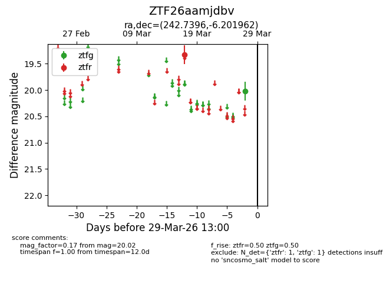
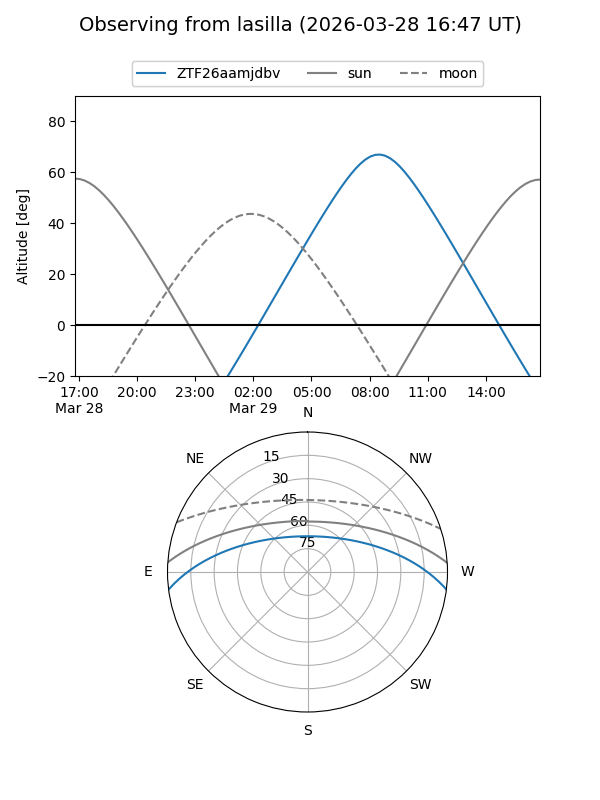
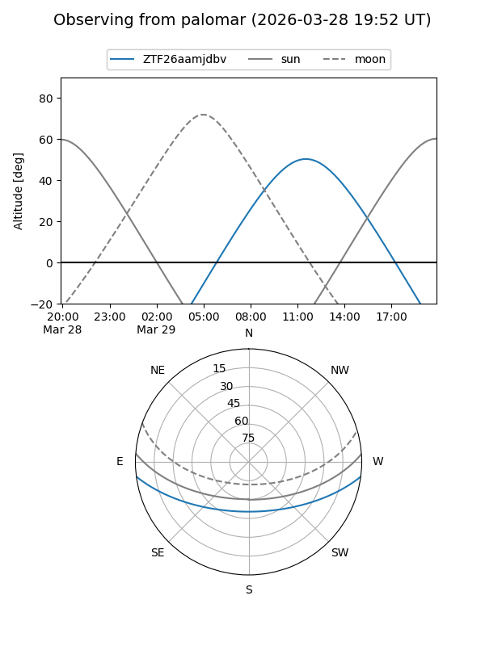

ZTF26aamjdbv
Target ZTF26aamjdbv at 2026-03-29 13:03
Aliases and brokers:
FINK: link
Lasair: link
ALeRCE: link
alt names
ZTF26aamjdbv (ztf,fink_ztf)
Coordinates:
equatorial (ra, dec) = 242.7396,-6.20196
equatorial (HMS+DMS) = 16:10:57.51,-06:12:07.06
galactic (l, b) = (5.8777,+31.39132)
Flags:
Photometry:
last ztfg=20.02, ztfr=19.33
1 ztfg, 1 ztfr detections
Lightcurve

Visibility


Additional plots